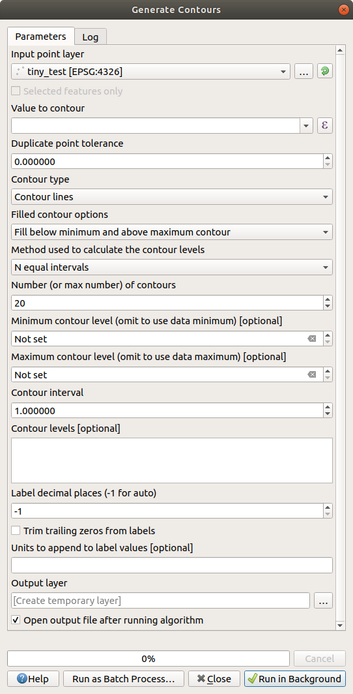

The contour generator generates a layer of contour lines or polygons based on a values at a set of data points. The algorithm uses a set of parameters defining the source of the data for contouring, and the parameters used to define how the contour levels are calculated.
The algorithm requires the python libraries numpy and matplotlib python libaries to be installed.
As with all processing algorithms the parameters can be entered manually into the algorithm dialog box, or created programmatically. This allows the contour function to be used by other plugins and processing scripts.
The contouring function can also be accessed from the ContourDialog.
The plugin uses the following parameters:
The source of data points to contour
A field or expression defining the data value at each point
If greater than zero then where points are closer than this to each other only one of the points will be used
The type of layer to create. Can be contour lines, filled contour polygons each representing the area where the data lies between two contour levels, or layer polygons representing the area where the data is greater than the contour level
If creating filled contours then select whether to create polygons where the data is less than the minimum contour level and/or greater than the maximum contour level. Options are:
The contour levels can be calculated from the data values using one of a number of possible algorithms. Options are:
For the "N equal intervals" and "N quantiles" methods specifies the number of intervals to create. For the "Logarithmic intervals" and "Fixed contour interval" methods this is the maximum number of contour levels that will be created.
Specifies the minimum contour level. By default this comes from the minimum data value.
Specifies the maximum contour level. By default this comes from the maximum data value.
For the "Fixed contour interval" method this specifies the interval between contour levels.
Specifies the decimal places used to represent the value in the label attribute of each contour feature. If -1 or not set then a value is calculated based on the contour levels.
If this is True then trailing zeros after the decimal point are removed from the value in the lavel attribute.
Defines a text string that is appended to the label attribute of each contour feature. Typically this might be units of measurement.
The destination layer for the contour features.
The following example shows the use of the algorithm in a python script. Most of the paramters are optional, but may be required depending on the contour method chosen.
import processing
layer=iface.mapCanvas().currentLayer()
result=processing.run(
"contourplugin:generatecontours",
{ 'ContourInterval' : 1,
'ContourLevels' : '',
'ContourMethod' : 1,
'ContourType' : 0,
'DuplicatePointTolerance' : 0,
'ExtendOption' : 0,
'InputField' : '"z"',
'InputLayer' : layer,
'LabelDecimalPlaces' : -1,
'LabelTrimZeros' : False,
'LabelUnits' : '',
'MaxContourValue' : None,
'MinContourValue' : None,
'NContour' : 20,
'OutputLayer' : 'memory:' }
)
layer=result['OutputLayer']
QgsProject.instance().addMapLayer(layer)